NCC allows service providers to have a secondary monetary balance in addition to the main account balance. The secondary balance gets consumed before the main account balance irrespective of their priority. However, NCC recommends service providers to keep priority of secondary balance higher than main balance. The secondary balance can be subscribed by a bundle with no tariff/rules/rate application.
The main account balance is consumed only after the secondary balance is completely exhausted. If either the secondary balance, or main account balance is insufficient to fund the fee, then the fee gets deducted (depending on the Rate granularity configuration and Skip granularity flag settings) from a combination of secondary balance, and main account balance.
Consider the following examples to better understand this feature.
Example 1: The following figure shows a case where Bob's device has two balances namely main and secondary balance. On execution of the call, the call cost is covered by consuming the money from secondary balance. In this case, the secondary balance has sufficient balance to fund the call.
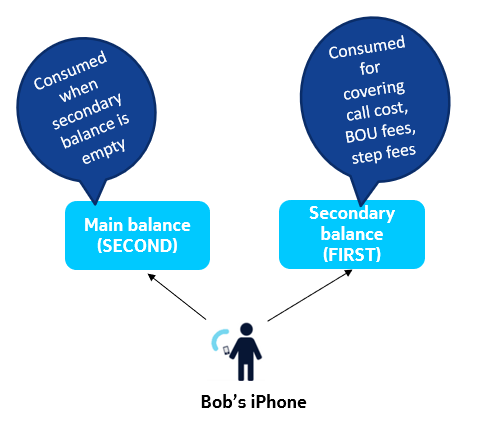Example 2: The following figure shows a case where Bob's device has two balances namely main and secondary balance. On execution of the call, the call cost is covered by consuming the money from secondary balance followed by main balance. In this case, the secondary balance has insufficient balance to fund the call. Hence, a combination of secondary and main balance is used for funding the call.
- In the secondary balance feature implementation, the exhaustion of secondary balance exhaustion and then usage of main balance depends on the configuration of rate applied on the main balance with specific granularity and skip granularity for low balance configuration. It also depends on these configurations which may result to some money units remaining in secondary balance and then movement to main balance for consumption.
- The terms "secondary monetary balance" and "secondary balance", "main account balance" and "main balance" are used interchangeably in the document.
- The secondary balance is also known as a cost bucket, that is, money bucket. To avail this feature, the device/group has to subscribe to a secondary balance bundle. To create a secondary balance bundle, a service provider has to first create a bucket/allowance limit and then create a charging logic/service with usage_type as secondary_balance with bucket/allowance limit that is already created.
- The cost bucket consumption can be updated in a counter of cost type with Call usage and consumption Type as ALL. However, the cost bucket consumption cannot be updated in a counter with BOA activation Fee deduction for any consumption Type (All/Account and Bucket). The Step Fee deductions from the cost bucket can be added in the counter of cost Type and consumption Type as ALL.
- Do not create the secondary balance in the middle of an upgrade. You can create it when the upgrade is committed, that is, when the SM, ME, and database upgrade is completed.
- During the BOU bundle activation or consumption from step bucket, if the BOU subscription type or Step subscription type is Device, then only the Device specific secondary balances are considered for BOU Fee and Step fee deduction.
- During the BOU bundle activation or consumption from step bucket, if the BOU subscription type or Step subscription type is Group, then only the Group specific secondary balances are considered for BOU Fee and Step fee deduction.
- A new tag additionalBalanceInfo is added in the CDRs. The additionalBalanceInfo tag is available only for BOU Activation on commit in SCUR calls and dumps in on commit CDR. Single CDR, IEC call CDR does not contain this information.
- From the NCC GUI, this feature can be configured using the Balances
entity. Service providers can mention the balance name and secondary balance
amount with priority as mandatory inputs. The applicability condition is
optional as per usecases. When a secondary balance is created from NCC UI front
end internally, the following configurations happen:
- A charging logic/service is created with Usage_Type as SECONDARY_BALANCE.
- A bucket/allowance_limit is created with secondary balance value as initial value and its name as suffix.
-
In case of soft/hard stop, the first resource on which the action is applied is considered.
For example: If soft/hard stop threshold action is applied on a counter with scope as "ALL", and counter incrementation type as "Charging Service" (secondary balance). Then, the first applicable resource is Secondary Balance, and the next resource is the account main balance.
-
For sending notification in case of hard/soft stop for provisioning at threshold value, send notification action should be configured in Threshold Profile Group (TPG).
-
If the allowance bucket has higher priority than secondary Balance, then allowance limit is used for consumption. When the bucket is accumulated, the secondary balance is used for consumption and counter starts incrementing (counter scope="ALL" & counter incrementation type="Charging Service"(Secondary Balance)).
- In case of hard stop, if an allowance bucket is added for 10 bytes and has slice size of 25, minimum slice size of 15, and threshold configured at 10 money absolute from start, then while executing CCR-I, 10 is reserved from allowance bucket and 5 from secondary balance. While executing CCR-T, 10 is deducted from allowance bucket, and 10 from secondary balance (counter value = 10).
Secondary balance applicability
- BOU Activation fees: When the BundleOnUse type (only for BOU
On Commit) of bundle is activated during a call, the Bundle Activation Fee
is deducted from the secondary monetary balance first and then main account
balance. Note the following assumptions considered for secondary balance
implementation:
- The secondary balance is supported for BOU with activation priority such as ON_COMMIT. BOU on default or ON_RESERVATION is not supported for BOU Activation fee deduction from the secondary balance.
- If the BOU fee reservations are done by multiple devices, then the BOU bundle is activated when any of the device commits the reservation.
- If the BOU fee reservation is done from a low priority secondary balance bucket, and a high priority secondary balance bucket is renewed/Get Balance through Update bucket Instance API before the CCR-U, all the balance in high priority bucket is consumed first, and the reservation of low priority bucket is cancelled.
- The BOU Activation fee feature supports accumulation in a counter only for the configuration when the Consumption Type is ALL. But, in case of secondary balance feature, whenever a BOU Activation fee is deducted from the secondary balance, irrespective of whether the Consumption Type is ALL, the counter is not accumulated. The BOU Activation fee deducted from secondary balance with any Consumption Type is not supported.
- The BOU fee gets committed from where it has been reserved when BOU1 and BOU2 activation fee have been reserved from different resources (Account/Secondary Balance).
- When USU=0, then the reserved activation fee is reverted back and BOU is not activated.
- Step fees: The Step fee is deducted for the step up of a step-bucket
from the secondary balance. Once the secondary balance is exhausted, the
main balance is consumed. Note the following points related to the step fee
reservation:
- If the step fee reservation is done from a low priority secondary balance bucket, and a high priority secondary balance bucket is renewed before the CCR-U, the balance in high priority bucket is consumed, and the reservation of low priority bucket is cancelled.
- If the step fee reservation is done from the Account's previous values and on commit, the secondary balance has sufficient balance (Renew/Get Balance through Update bucket Instance API), then step fee is deducted from the secondary balance rather than Account's previous values and the reservation of account (from previous values) is cancelled.
- If the step fee reservation is done from both secondary balance and Account, then during Audit, step fee is canceled in the reserve order, that is, first from Account and then from secondary balances.
- Call usage: If a device has a secondary monetary balance, then during a call, the secondary balance is consumed first. Once the secondary balance is exhausted, the main balance is consumed. When a secondary balance is used as a resource, it uses the tariff (rate/tax) applied on the main balance. The secondary balance is consumed before the main balance irrespective of the priority of the secondary balance charging service. The secondary balance behavior is same as main balance. The secondary balance is considered for call usage deduction only when rate is directly applied to the main balance, that is, Rate as rating action in Tariff. NCC offers many other types of call rate applications/no other type RATE action, that is, threshold-Rate/Threshold-NextRate/NextRate (split charging) are applicable for call cost deductions from secondary balance.
- Rates: For normal rate, or any special rate applied for the consumption of a call request, the secondary balance is consumed before main balance. Rate with a specific rate rounding factor can be applied in the tariff plan, and the rounded cost is deducted from the secondary balance before the main balance. The external rate can also be applied to the secondary balance as per its behavior in the current NCC system. The cost received as external rate gets deducted from the secondary balance first and then the main balance.
- Bundle fee: To use secondary balance for bundle fee, a balance should
be created with Applicable to fee flag enabled. Secondary balance is
not applicable to the following:
- If the bundle contains a balance (secondary balance), then secondary balance bundle fee is deducted from the main balance.
- AdjustBalance API: Secondary balance can be used through adjust balance API of the account.
- Discount: When the discount is applied on the step up fee and call usage, the discounted cost is deducted from secondary balance first and then the main balance. The discount for the call cost is the Call-Discount applied on the charging logic tariff. For example, RATING.Call-Discount = 50.
- Taxation: When the taxation is applied on the rate of a call request, the tax added on the call cost is deducted from the secondary balance before the main balance.
Notes for feature implementation
 Notice:
Notice:- The Step Fee deductions from the cost bucket can be added in the counter of cost Type and Consumption Type = ALL.
- Discount is applied based on the value of Use all step first
parameter as follows:
- When Use all step first = true, then if the discount bundle priority configured is less than step bucket, then discount is not applied. If the discount bundle priority configured is more than step bucket, then discount is applied.
- When Use all step first = false, then it depends on the configuration of discount at pass level, irrespective of discount bundle priority. If the discount is at pass0, when the step is parsed at step2, and pass is at pass1, then discount is applied irrespective of bundle priority. This is because, the step2 is always parsed after discount, thus discount gets applied.
- When the step bucket and main/secondary balance get considered at the time of call consumption, then connection cost is not considered.
- CDRs for secondary balance are logged only at CCR_U/T for StepCommit = TRUE. See CDR/EDR Reference guide for more details.
- AV is not supported for secondary balance in case of free deduction.
- The secondary balance can be subscribed by a Device or Group through Bundle and the Charging logic can contain only a single MONEY BUCKET as a secondary balance. This charging logic must have no tariff/rate and no thresholds applied to it.
- The secondary balance do not have tariffs/passes/rate directly applied to the secondary balance configuration.
- Multiple buckets cannot be defined for the secondary balance which are of Money type only.
- Any type of counters should not be configured to accumulate consumption from the secondary balance.
- Virtual policy counter is not supported with the secondary balance.
- The BOU Bundle Activation Fee deducted from the secondary balance cannot be accumulated in the counters.
- Any type of counter or spending limit must not be configured on the cost
bucket. If the cost bucket is configured with a counter or spending limit,
it does not accumulate the following:
- Call cost to be deducted from the secondary balance (cost bucket).
- BOU Activation Fee deducted from the cost bucket upon the activation of BOU bundle.
- Discount over Step Fee/BOU Activation fee deducted from the cost bucket.
- Step-Up Step Fee from the cost bucket while consuming the step bucket in the call request.
- Call cost applied by the special rate deducted from the secondary balance.
- Any limit/threshold with hard-stop, and soft-stop must not be configured over the secondary balance.
- Throttling QoS, and Send SNR use cases must not be configured on the secondary balance.
- Any kind of spending limits/session limits or multi-bundle counter limits in different features are not considered to be evaluated for secondary balance/cost bucket consumptions.
- Threshold/Limit with a Notification-Continue action can be applied only to the secondary balance in which the consumption notification can be received by the device having the secondary balance bundle. This type of use of threshold to send notification when money bucket/secondary balance is exhausted, that is, threshold at 100%, can be configured using REST (not through NCC UI) only. Threshold is not applicable to any secondary balance/bucket.
- Split charging, Next-Rate/surcharge, pre-rating simulation, and application of granularity with or without step features cannot consume from the secondary balance (cost bucket).
- In a tariff rule configuration, a rate can be applied without any target. It is known as the global rate. However, it is restricted to be used with the secondary balance. NCC supports another feature Cost Bucket: As additional balance for call usage through tariff rules. It is recommended to use either the secondary balance feature or the other cost bucket feature. Both cannot be operational together.
- Currently, taxation can be applied over the Step-Up fee. However, the use cases to charge the Step-Fee or BOU activation fee from the secondary balance must not configure the taxation feature on fee deductions. Taxation cost on fee cannot be deducted from the cost bucket.
- The fee deductions that are not supported from the secondary balance are as
follows:
- Renewal Fee, Renew subscription/account with Fee Action, Prorate with Fee activation and refund.
- Fee with any APIs is not deducted from the secondary balance.
- BOU activation fee can be deducted from the secondary balance but discount cannot be applied on it.
- Any debit operation API, for example E-commerce APIs, debit APIs on the main balance cannot be deducted from the secondary balance.
- The BundleOnUse and Step-Up logic are applicable for reservation, commit, and default. However, for this feature only step up at commit and BOU at commit are supported.
- Split charging functionality is not supported for the secondary balance.
- Rate as per threshold and split charging with next threshold rate feature (ThresholdRate/Threshold.NextRate) is not supported for the secondary balance.
- The secondary balance bundle, that is, a bundle containing a secondary balance charging logic with a money bucket cannot be subscribed as a BOU bundle.
- The secondary balance bundle, that is, a bundle containing a secondary balance charging logic with a money bucket cannot be subscribed as a Step Up bundle. The secondary balance cannot be a tiered allowance or a step up bucket.
Configuration
- To avail a secondary balance, service provide must create a bundle which is a secondary balance. This bundle must contain a charging logic (charging service) which is configured as a type secondary balance.
- Service provider must create a charging logic with ENUM as usageType:"SECONDARY_BALANCE" with a single money bucket. NCC determines the resource in this charging logic as a secondary balance. Note that this resource must be a Money type bucket only and do not have any charging tariff plans.
- The bundle contains a charging logic of type Secondary_Balances. This charging logic can have an applicability condition and priority across charging logic.
- The charging logic contains only a single money type bucket.
- This charging logic does not contain definition of any tariff/charging rules/pass/multi-pass/fall back rules.
- There is no selection of this Money Type bucket anywhere in the rule configuration.
- To use secondary balance for bundle fee, a balance should be created with Applicable to fee flag enabled.
- Secondary balance should be created in a separate bundle. It should not be combined with other charging logics.
- Secondary balance bundle can be renewed using the lifecycle action
RenewSecondaryBalanceSubscriptionAction. It has the following
events:
- SecondaryBalanceSubscriptionRenewedEvent
- NotEnoughFundsForSecondaryBalanceEvent
The secondary balance bundle renewal fee is deducted only from the main balance. Renewal fee for normal bundles is deducted from the secondary balance, if subscribed. Fee from the secondary balance is deducted only if the secondary balance parameter Applicable for fee is enabled. If secondary balances are insufficient for renewal of normal bundles, then main balance is used to fund the remaining amount required for the renewal of normal bundles.
- In the Charging configurator, create a secondary balance. Note that you must
PUBLISH the record to an ME.Figure: Secondary balance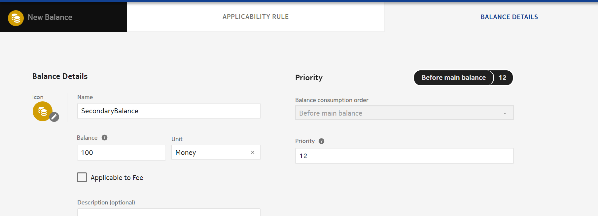
- Create a charging logic (charging service) using API with ENUM as
usageType:SECONDARY_BALANCE with a single money bucket. NCC
determines the resource in this charging logic as a secondary balance.A single money type of bucket can be added in this charging logic without threshold and counter.
 Note:
Note:When a charging logic is created using GUI, a bucket is automatically created. However, while provisioning through API, a bucket definition must be created first and then a charging logic of secondary balance type must be created.
- Create a bundle (services) that contains a charging logic (charging service) of type secondary_Balance. This charging logic can have applicability condition and priority. The charging logic contains a single money type bucket. No tariff or charging rules or pass or multi-pass or fall back rules are defined in this charging logic. You can select the secondary balance under the Logics option.
{kind=link}
{kind=link} Note:
Note:- The secondary balance (cost-bucket) is applied based on the charging service priority, and applicability conditions. Secondary balance bundle is of the highest priority but with no Pass/Tariff rules.
- Cost buckets must respect the priority of the bundles with rates, step buckets, and BOU Activation Fee.
- The cost bucket follows the lifecycle of the bundle.
Examples
Case 1: BOU Activation Fee is charged from the secondary balance for parallel calls of device
In this case, the BOU activation fee gets deducted successfully when the Device1 reserves BOU fees from the secondary balance, but the commit for Device2 comes prior to the Device1.Following is the configuration needed for this use case.
- Enable the application preferences - BOU Activation Priority, BOU Activation Fee enabled for CDR, Granularity skip for low balance, and EDR Generation Flag.
- Create a periodic lifecycle for BOU Bundle with Charge Fee Action Success event, Account Reservation Success event, and Account Commit Success event.
- Create a CS1 having secondary balance of SB15, cost bucket value of 15, and priority as 1.
- Create an Allowance Limit of type Byte with a value of 100 Bytes.
- Create a CS2 having a Data Allowance Limit of value 100 Bytes.
- Create Bundle1 having Secondary Balance of SB15.
- Create Bundle2 having CS2 with bundle fee as 10, Activation Type as On Use, Activation Fee of 15, and Activation Event as CallActivationEvent.
- Create an Account with Balance of 100.
- Create a device D1, and device D2 with the Subscription Index as Group.
- Attach the Bundle1, and Bundle2 to the Group.
- Attach Device D1, and Device D2 to the Group.
- Set BOU Activation Priority to ON_COMMIT.
- Set BOU Activation fee enabled in CDR to true.
- Set GRANULARITY SKIP FOR LOW BALANCE to true.
- Set EDR Generator Flag to true.
Note: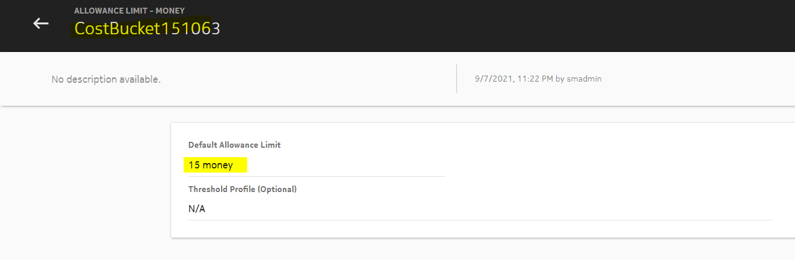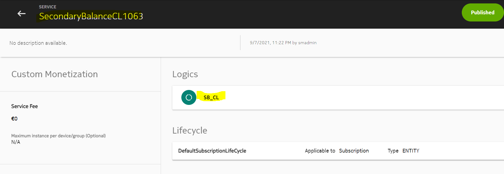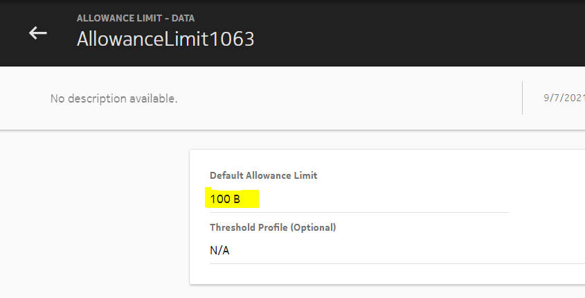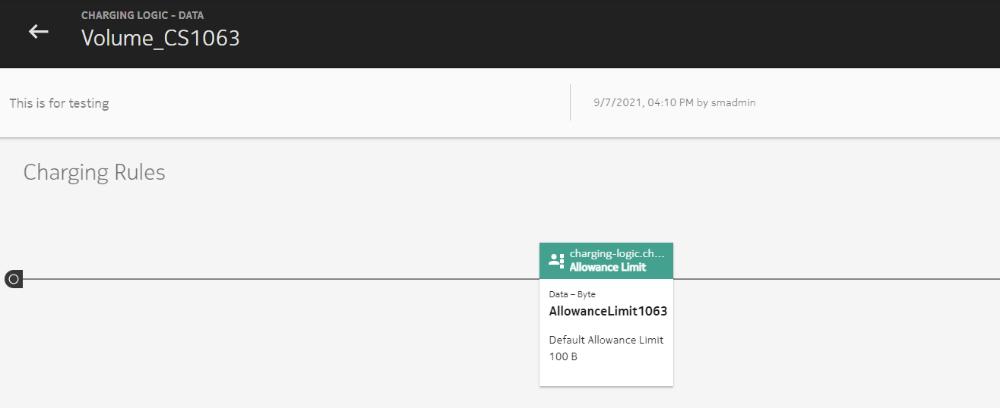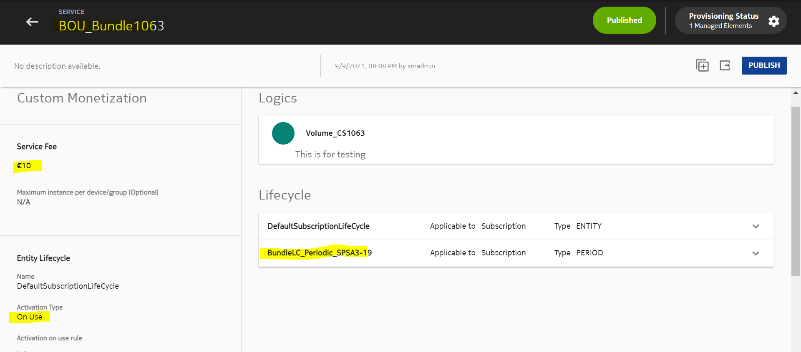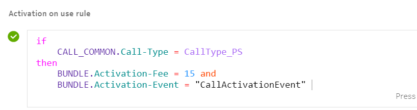
Following is the Group Overview which shows that the Group has two devices attached to it. The Secondary balance bundle has 15.00 Money in it and a BOU bundle has a data bucket of 100 Bytes. The state of the BOU bundle is PreActive.

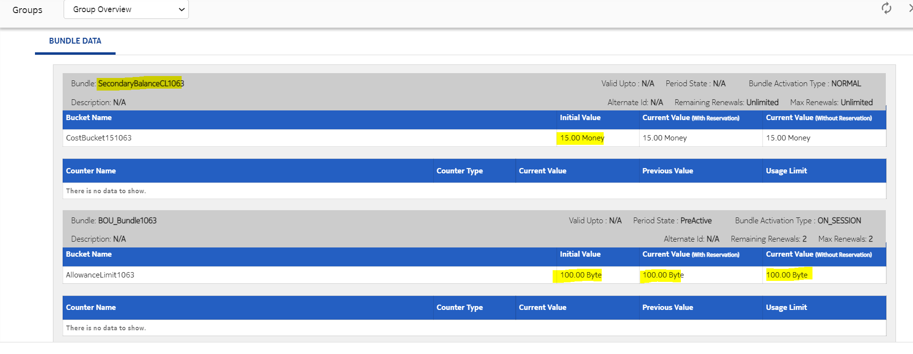
When a call is executed (SCUR-I) from Device1 with RSU=10, then the BOU Activation Fee of 15 is reserved from cost bucket. The value of cost bucket becomes 0. The value 10 is reserved from the allowance limit. The BOU bundle state is still PreActive as the fee is not yet deducted.
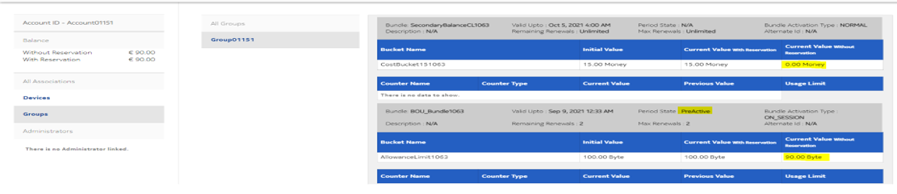{kind=link}
When a call is executed (SCUR-I) from Device2 with RSU=20, the reservation is done from data bucket only. The BOU Activation Fee is not reserved since its already reserved from Device1. The total reservation is D1(10)+D2(20) = 30, and allowance limit = 70.
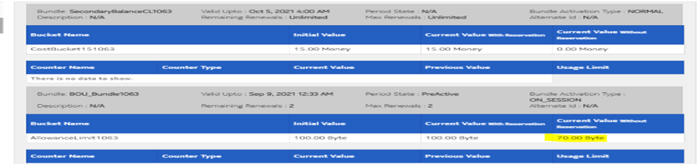{kind=link}
When SCUR-U is received for Device 2 with USU=20, RSU=5, then it commits 20 units and the activation fee also gets committed. The BOU bundle state becomes Active The total reservation is D1(10)+D2(5) = 15, allowance limit = 65(80-15).
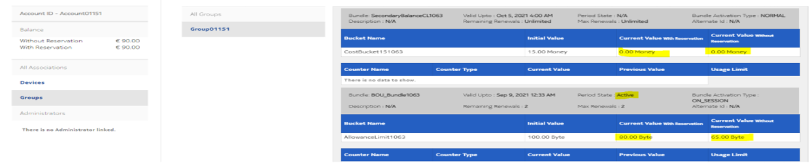{kind=link}
When the SCUR-U for Device 1 is received with USU=10, RSU=10, it commits 10 and reserves 10.
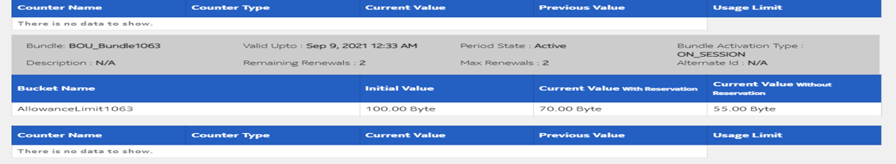{kind=link}
When the SCUR-T for Device 1 is received with USU = 20, it commits 20 units.
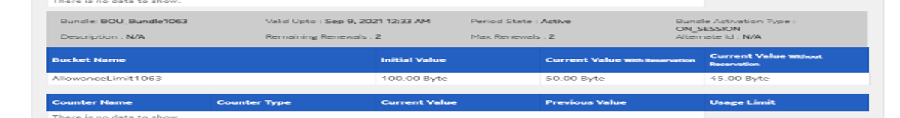{kind=link}
SCUR-T for Device2 is received with USU = 10, it commits 10 units. The commits happen from the data bucket.
{kind=link}
- At SCUR-I for Device1, the Activation fee is reserved from the secondary balance.
- At SCUR-U for Device2, the Activation fee is deducted from the secondary balance.
- The BOU bundle gets activated on Commit and the periodic state is changed from PreActive to Active.
Case 2: Secondary balance is charged for Step Fee deduction on Step up before charging from the main balance
- Create a rate object as follows:
Name = RatePS , RateType = Byte , Granularity Level = Byte, Cost/Quantity = 3/1 B, Step Size = 0 KB, Connection Cost = 2.
- Create two step buckets having the following values:
Name = stepbucket1, step1 = step size 20, step2 = step size 12 and step fee 7, step3 = stepsize 6 and step fee 8, step4 = stepsize 6 and step fee 5.
Name = stepbucket2 , step1 = step size 12, step2 = stepsize 6 and step fee 8, step3 = stepsize 6 and step fee 5.
- Create three charging services (CS). CS1 should have a step bucket (stepbucket1) applied at pass0 with a priority of 3000. Step bucket is picked based on the 3GPP_GGSN_MCC_MNC value.
- CS2 (CSStepBucketwithMainBalance) should have a step bucket (stepbucket2) along with the main balance. StepBucket2 is applied at pass2, and the main balance is applied in another branch of pass2 with a priority of 20000.
- Create a secondary balance (SB) with the value of money as 50, and priority as 200.
- Create three bundles (bundle1, bundle2, and bundle3) having CS1, CSStepBucketwithMainBalance, and secondary balance (SB) respectively.
- Create an account, and device object.
- Create a group object having three subscriptions with all the three bundles.
- Set the application preference Step-Up On Commit to true.
{kind=link}
{kind=link}
 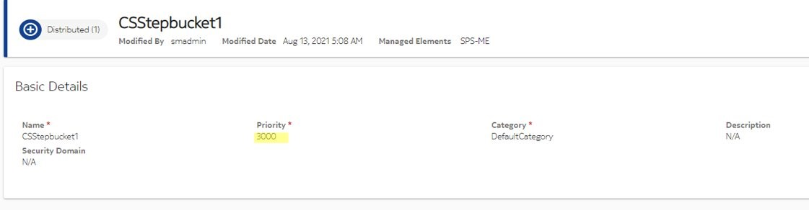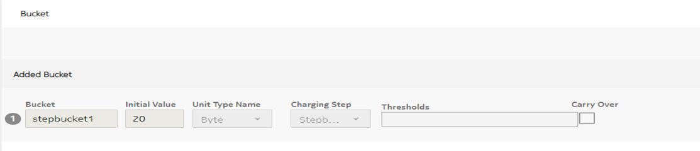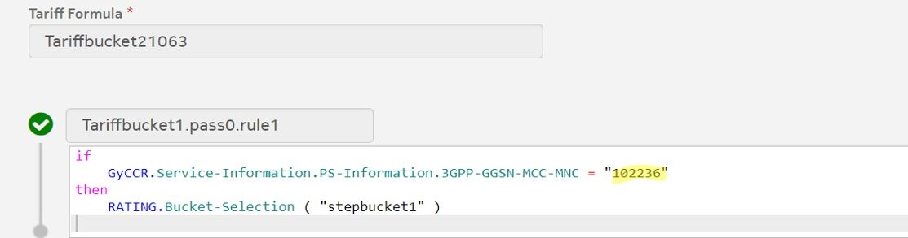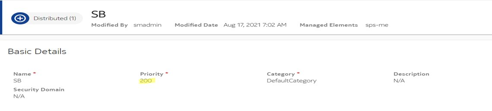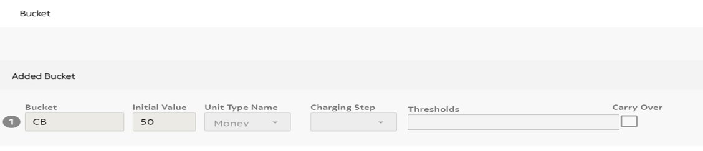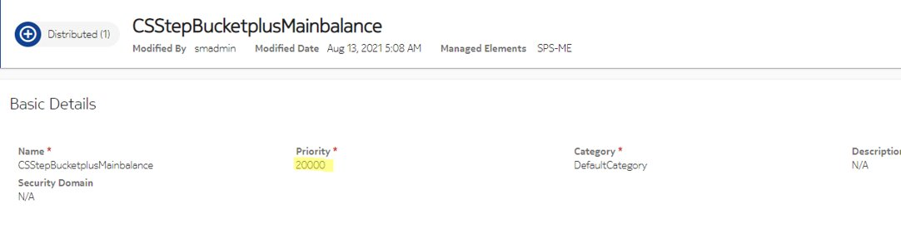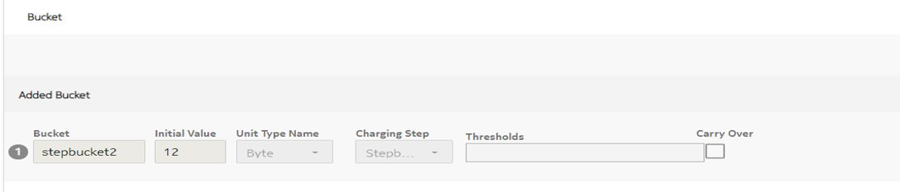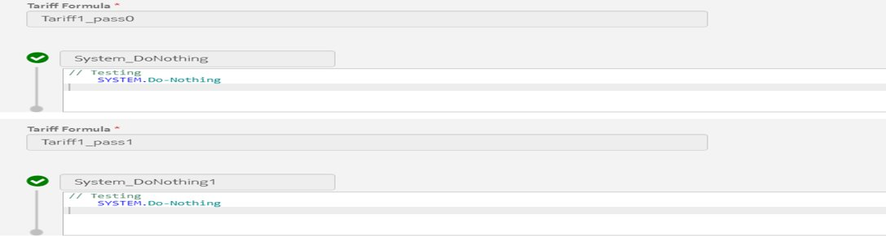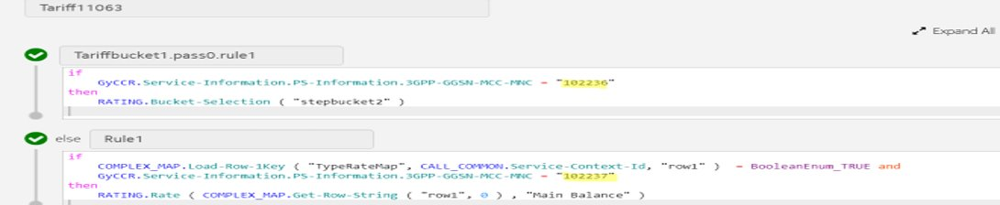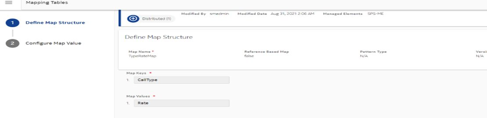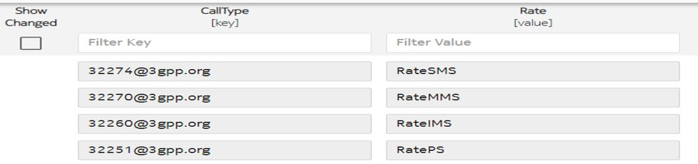
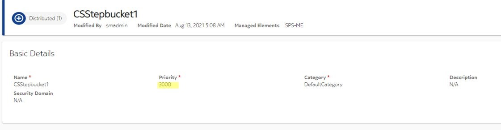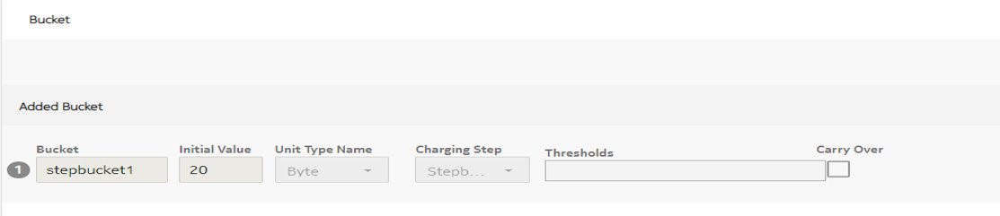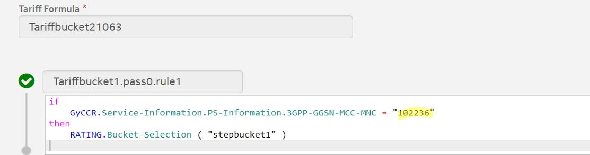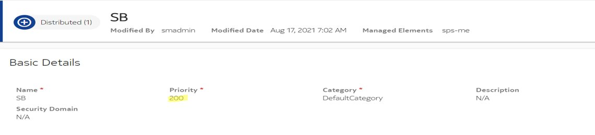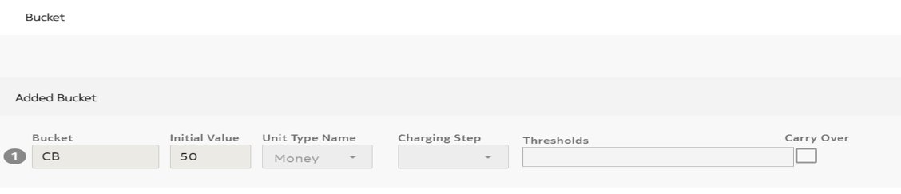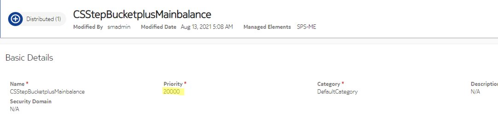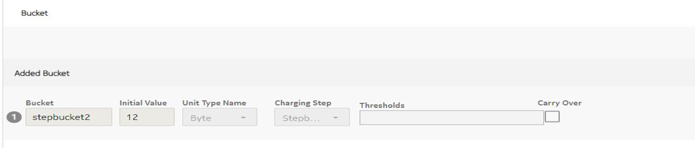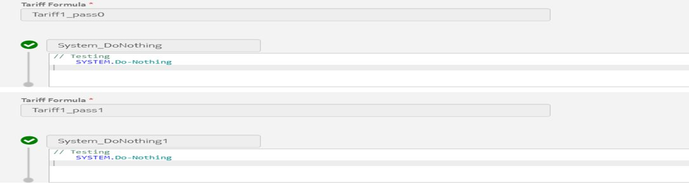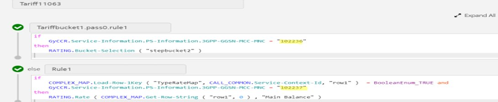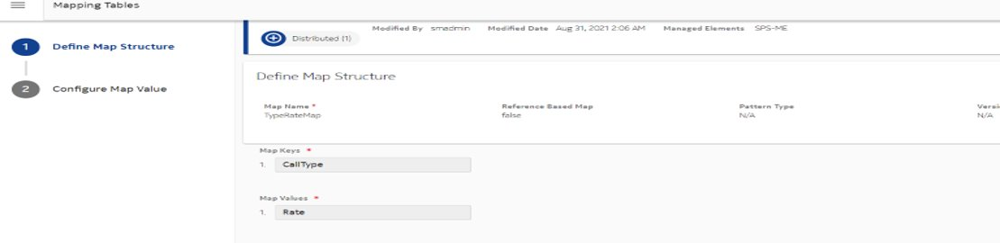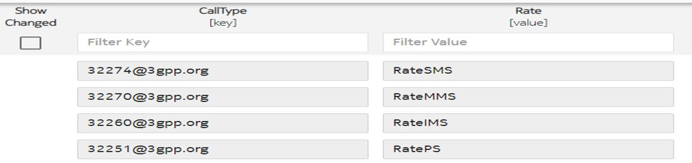{kind=link}
{kind=link}
{kind=link}
{kind=link}
{kind=link}
{kind=link}
{kind=link}
{kind=link}
{kind=link}
{kind=link}
{kind=link}
 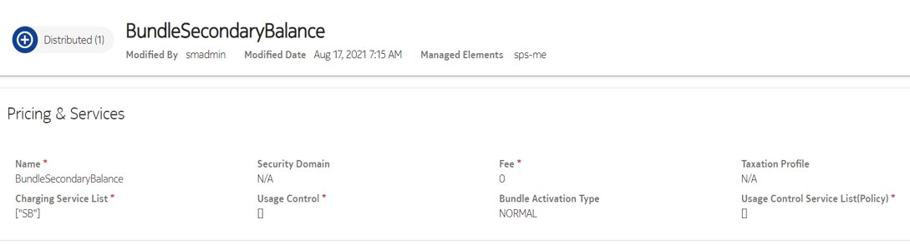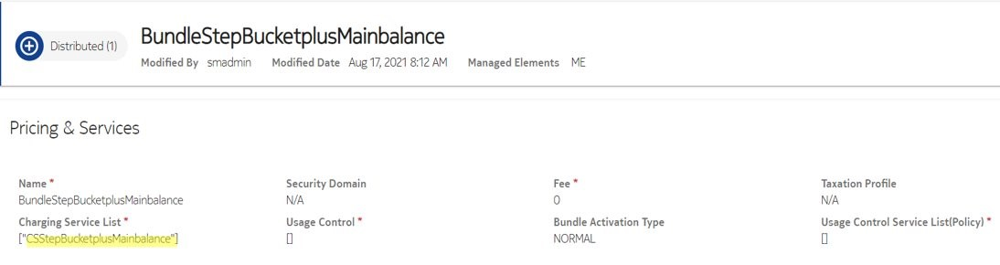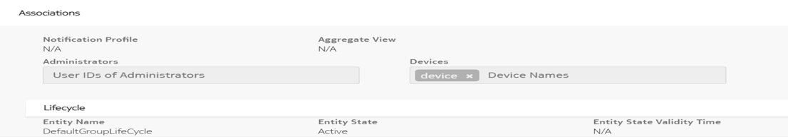
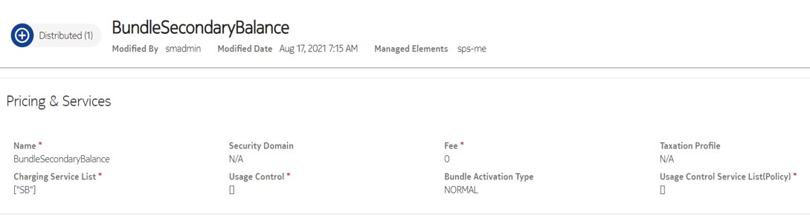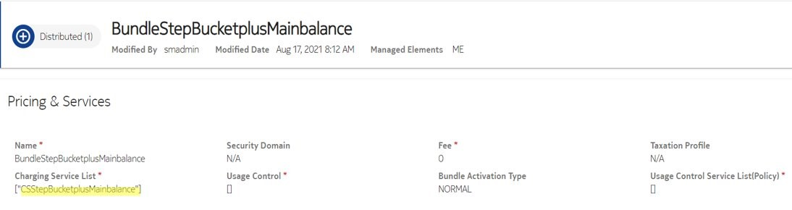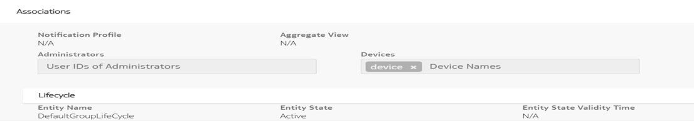{kind=link}
{kind=link}
{kind=link}
Exhaust secondary balances (SB) before main balance (MB)
When a secondary balance does not have enough credit for the call types - SMS IEC, eCommerce, data, and voice, NCC deducts the available balance from the secondary balance and the remaining from other available secondary balances or main balance. The secondary balance (SB) resources are exhausted for a call even if there is not enough balance in the secondary balance resource to charge for the defined granularity. Once the highest priority defined secondary balance is exhausted then further deduction is allowed from next priority order secondary balance (SB) and main balance (MB).
If the account and secondary balance together have sufficient combined balance to charge a direct debit/SCUR call, then the applicable call types (SMS IEC, eCommerce, data, and voice) are successful. If secondary balance is low, then secondary balance is exhausted first and the rest is charged from the main balance.
{kind=link}
Below details multiple secondary balance with their associated values and priority order for a device.
Scenario1: SB1-0.2, SB2-10, SB3-10 MB-10 Priority: SB1> SB2> SB3
{kind=link}
For a direct debit call on this device with RSU-1, the call is charged across multiple secondary balance in the defined priority order exhausting the top priority items in the list.
{kind=link}
Note the following points about this feature:
- This feature is applicable only for the SB and not any other resource types.
- This feature is applicable only to direct debit calls, data calls, and voice calls.
- This feature works as expected only with counter thresholds.
- Next-Rate, Threshold-Rate and Threshold-Next-Rate actions in rules do not work currently with SB. Though Rate and Tiered-Rate work as expected.
- This is enabled by default and cannot be controlled by any flag.
- There is a consideration for Tiered Rate with Primary and
Secondary Rate defined.
- It may not be able to use the equal granularity unit of both the primary and secondary rate from SB. A little balance might be left in the secondary balance SB1, and the remaining consumption for the call might be charged from subsequent SB or MB.
- This remaining balance SB1 can be exhausted in further calls.
- Step size should be defined as multiples of granularity for a step. Defining other values for step size can result in difference in cost while charging from main balance only, and charging from secondary balance and main balance.
- The fixed fees for a step is charged only from a single secondary balance or main balance. It cannot be split across multiple secondary balances or main balances.
- GSU is granted in multiples of granularity.
For example: Rate is defined as 1 Money for 10MB with a granularity of 10MB, and skip granularity flag is OFF. If secondary balance and main balance combined are sufficient to charge for 15MB, then for an RSU of 20MB, 15MB is reserved for the call with GSU of 10MB (multiples of granularity). The remaining 5MB is released in the following update or terminate call.